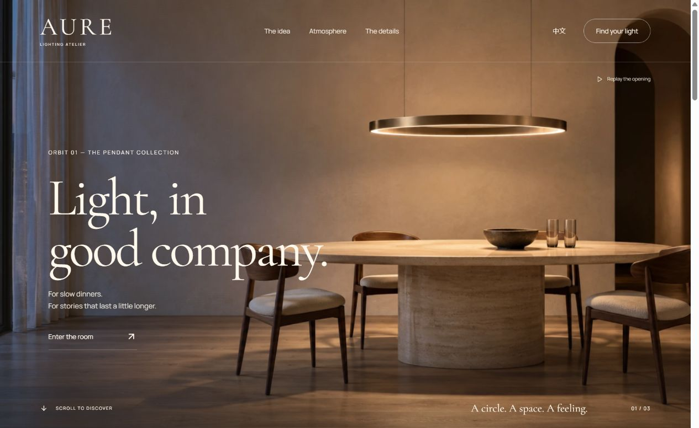
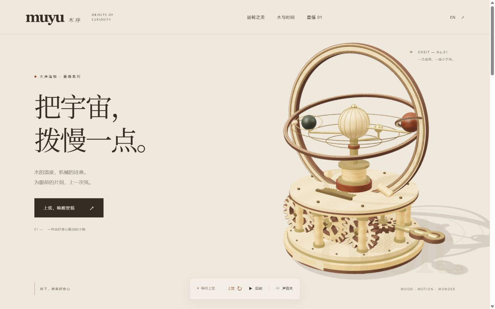
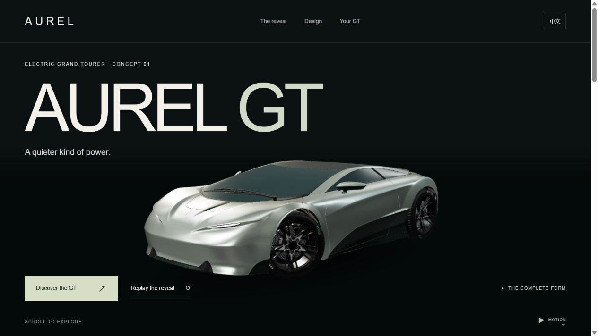
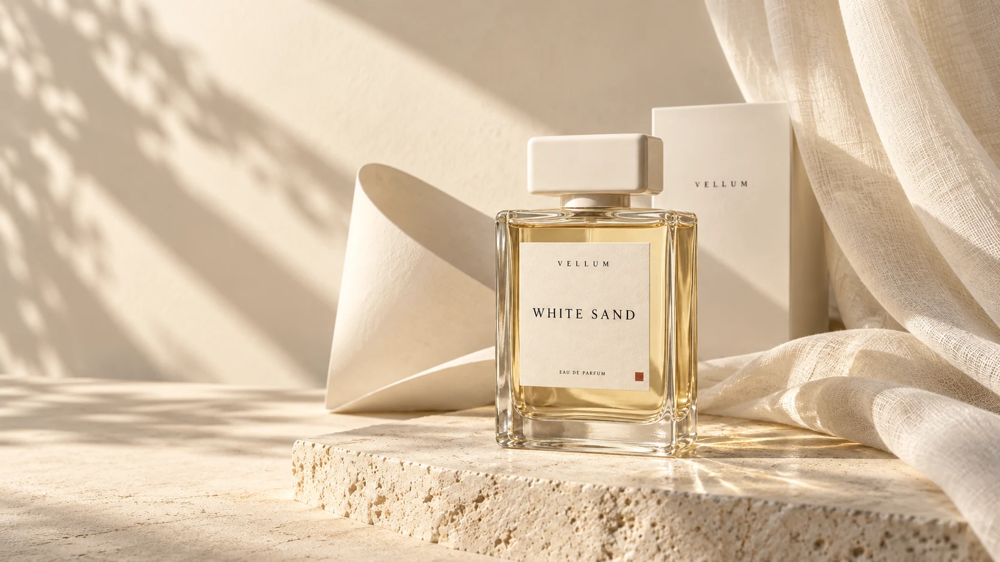
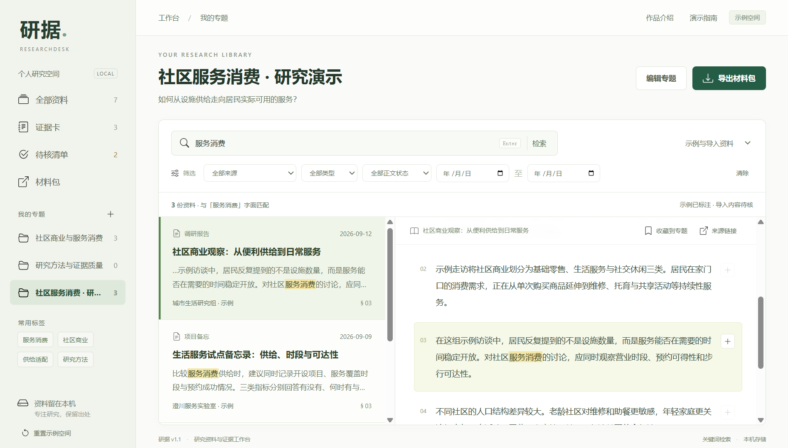

INTERACTIVE STUDIES / 2026
动起来，才算数。
四个独立交互作品。点击进入，亲手探索。

AURE · Orbit01 ↗
灯光切换、细节与材料

MUYU · 木序星循 ↗
机械结构与交互拆解

AUREL · GT ↗
汽车发布与3D交互

VELLUM · 薄境 ↗
香氛选购与本地状态
SVG / MOTION
SVG 动画画廊 ↗
鹈鹕与鳄鱼，两项独立实验

研据 · ResearchDesk ↗
原文、证据卡与复核界面回放

ReportDesk ↗
品牌报告、审核与版本界面回放